このガイドでは、Google Cloudの「Text-to-Speech」機能を使うために必要なAPIキーの取得方法を、初心者の方にも分かりやすく説明します。
事前準備
- Googleアカウント：GmailやGoogle Driveで使っているアカウントで大丈夫です
- クレジットカード：無料枠がありますが、登録時に必要です（通常の使用では課金されません）
1Google Cloudにアクセス
💡 補足1: Google Cloud Consoleは、Googleが提供するクラウドサービスの管理画面です。Gmail やGoogle Driveと同じGoogleのサービスの一つです。
💡 補足2:初めて利用する際は、登録手続きが発生します。クレジットカード登録がありますが、フルアカウントにしない限り、自動で請求されることはありません。本人確認みたいなものです
- Google Cloud Console にアクセス
- お持ちのGoogleアカウントでログイン
- 登録手続きを行う
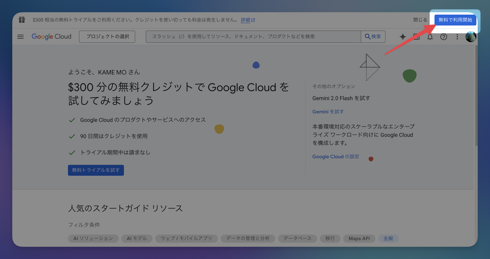 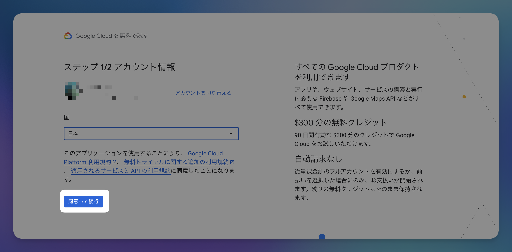 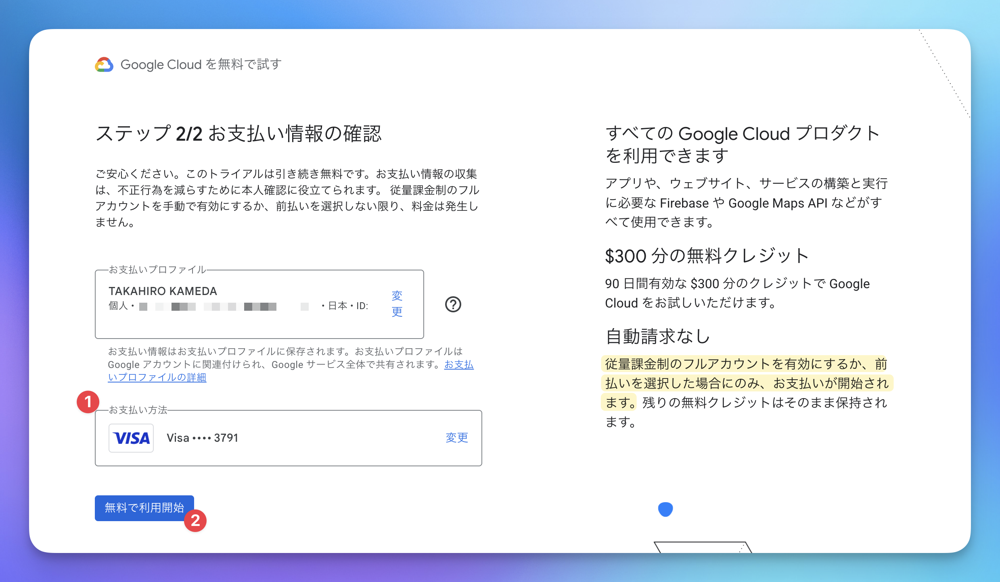 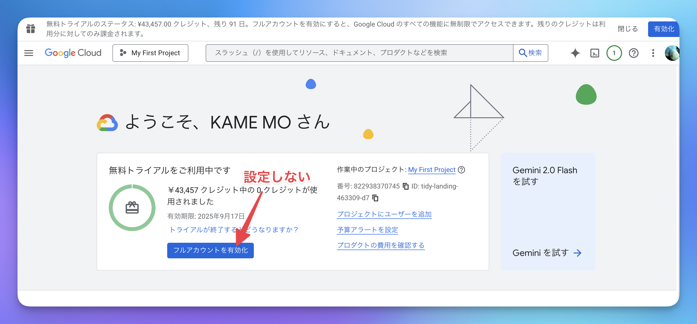
2Text-to-Speech APIを有効化
APIを使用するためには、まずそのサービスを「有効化」する必要があります。
- 検索ボックスに「Text-to-Speech」と入力 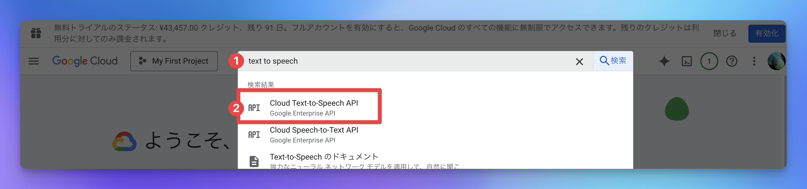
- 「Cloud Text-to-Speech API」 をクリック
- 「有効にする」 をクリック 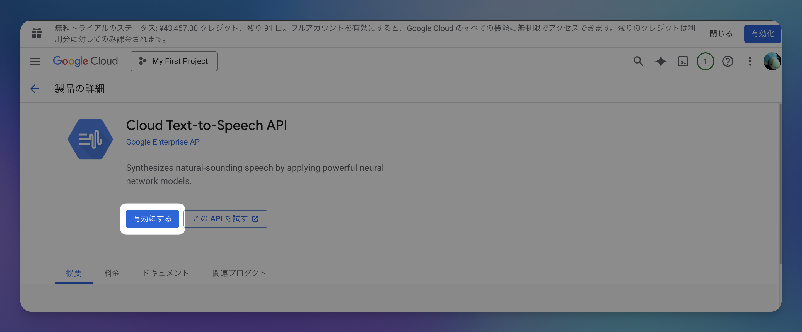
💡 補足: APIとは「アプリケーション同士が会話するための仕組み」です。Text-to-Speech APIを有効にすることで、文字を音声に変換する機能が使えるようになります。
4認証情報（APIキー）を作成
APIキーは、あなたがこのサービスを使う権限があることを証明する「鍵」のようなものです。
- 左側のメニューから 「APIとサービス」 → 「認証情報」 をクリック 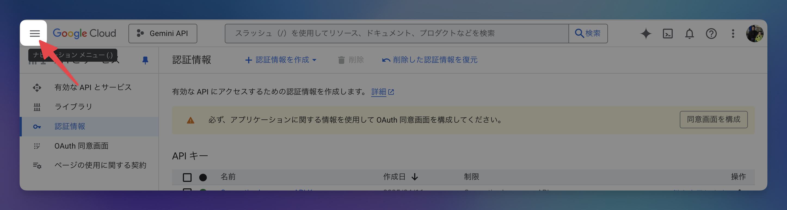 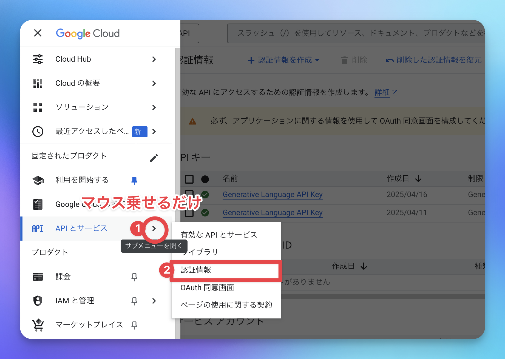
- 画面上部の 「認証情報を作成」 をクリック 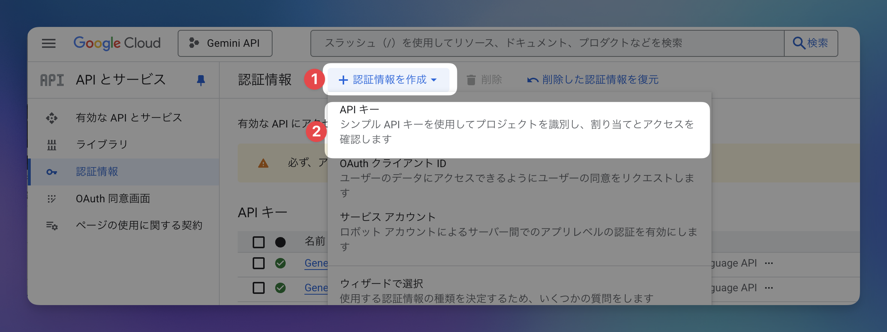
- 「APIキー」 を選択
- APIキーが作成されます（後でコピーするので、この画面は開いたままにしておきます） 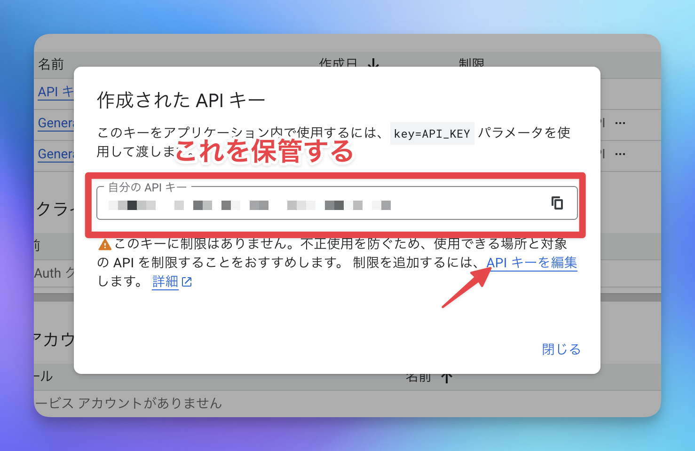
5APIキーを制限して安全性を高める
作成したAPIキーは、そのままだとGoogle Cloudの全ての機能にアクセスできてしまいます。安全のため、Text-to-Speechのみに制限しましょう。
- 作成されたAPIキーの画面で 「キーを制限」 をクリック 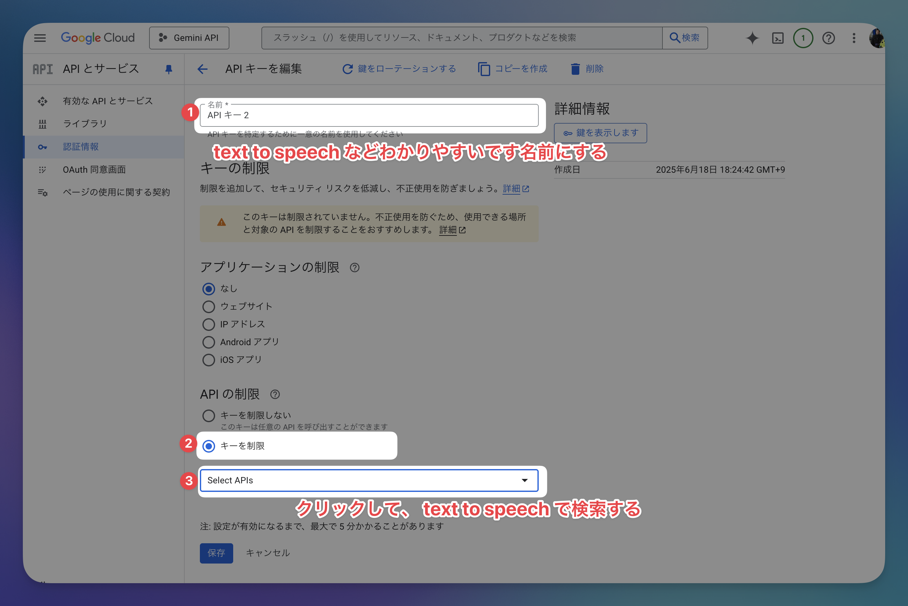
- 「API の制限」 セクションで：
- 「キーを制限」 を選択
- 「API を選択」 をクリック 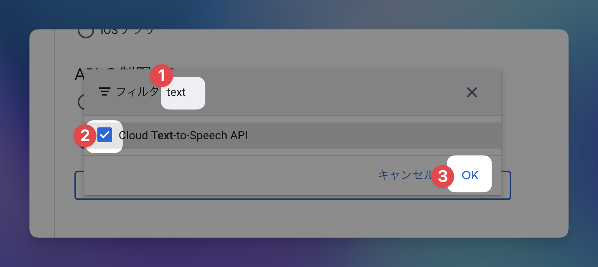
- 「Cloud Text-to-Speech API」 にチェックを入れる
- 「OK」 をクリック
- 画面下部の 「保存」 をクリック
⚠️ 重要: この制限により、万が一APIキーが漏洩してもText-to-Speech以外の機能は使われません。
6APIキーをコピー
- 認証情報の一覧画面で、作成したAPIキーの右側にある コピーアイコン をクリック 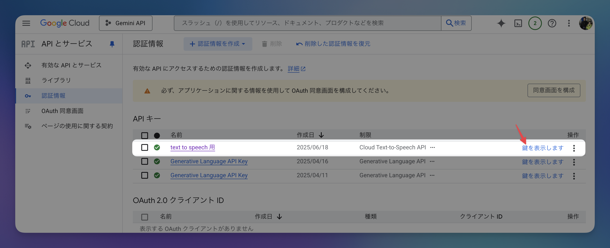
- APIキーがクリップボードにコピーされます
⚠️ 注意: APIキーは秘密情報です。他人に教えたり、ウェブサイトに投稿したりしないでください。
🎉 完了！
これで、Google Cloud Text-to-Speech APIを使用するためのAPIキーが取得できました。
よくある質問
Q: 料金はかかりますか？
A: Text-to-Speech APIには無料枠があります。月間100万文字まで無料で利用できるため、通常の使用では料金はかかりません。詳細は料金ページをご確認ください。
Q: APIキーを紛失した場合は？
A: Google Cloud Consoleの「認証情報」画面から、いつでも確認できます。また、必要に応じて新しいAPIキーを作成することも可能です。
Q: セキュリティが心配です
A: このガイドで設定した制限により、APIキーはText-to-Speech機能のみに使用されます。さらに心配な場合は、定期的にAPIキーを再生成することをお勧めします。